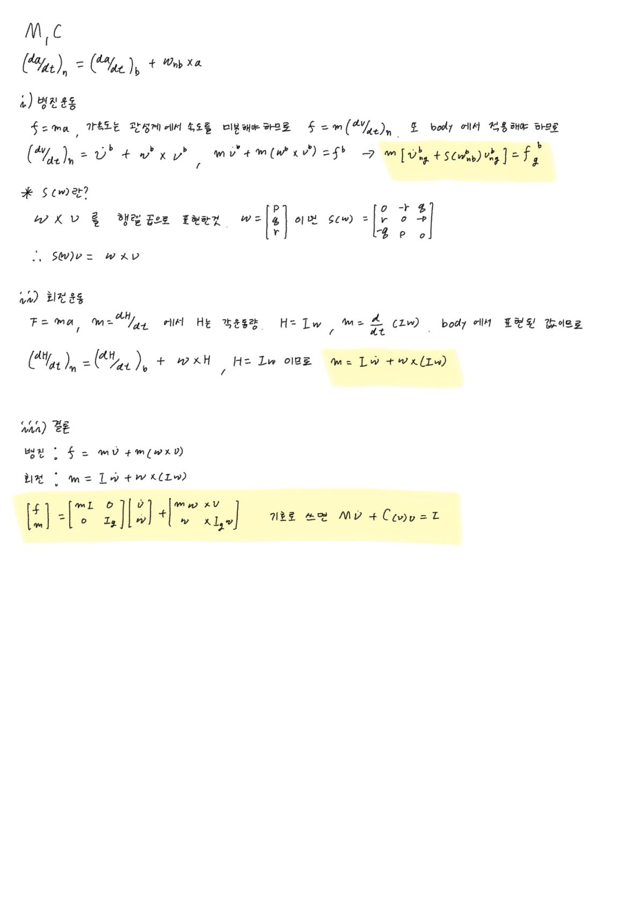

Transport Theorem
한 줄로
회전하는 좌표계에서 벡터를 미분하는 공식. 관성계에서 본 변화율 = 회전계에서 본 변화율 + 축이 돌아서 생기는 몫.
⎛ da ⎞ ⎛ da ⎞
⎜────⎟ = ⎜────⎟ + ω × a
⎝ dt ⎠ₙ ⎝ dt ⎠_b
어디에 앉는가 — 6-DOF Marine Craft Model 의 M ν̇ + C(ν)ν = τ 에서 C(ν) 가 어디서 나왔는지에 대한 답.
왜 필요한가
두 가지를 동시에 원하기 때문이다.
- Newton 법칙은 지켜야 함 —
F = ma는 회전하지 않는 좌표계에서만 성립 - 숫자는 BODY 기준으로 쓰고 싶음 — 그래야 질량행렬
M이 상수 (Moment of Inertia)
둘을 잇는 보정항이 ω × a.
미분한다는 말에는 관찰자가 들어 있다
배에 깃대(선수 방향 화살표 벡터 a)를 세운다.
| 재는 것 | 결과 | |
|---|---|---|
| 배 안 사람 | 성분의 변화 | 0 — 깃대는 볼트로 박혀 있으니 |
| 해안 사람 | 실제 벡터의 변화 (크기+방향) | 0 아님 — 배가 yaw로 돌면 깃대도 같이 돈다 |
같은 물체인데 관찰자에 따라 변화율이 다르다. 배 안 사람의 자(좌표축)가 배와 함께 돌기 때문 — 자가 같이 돌면 화살표가 돌아도 눈금은 그대로다.
미분한다 = 어떤 축을 고정으로 취급하고 그 축에 대한 성분 변화를 재는 것. 어느 축을 고정하느냐가 곧 관찰자다.
회전목마 위의 사과도 같은 이야기다. 손에 사과를 쥐고 있으면 회전목마 위의 나는 “가만히 있다(변화율 0)“고 하고, 땅 위 사람은 “원을 그리며 돈다(0 아님)“고 한다. 같은 사과, 같은 순간, 다른 답 — 누가 틀린 게 아니다.
곱의 법칙 하나로 ω × a 가 튀어나온다
BODY 좌표축 단위벡터를 i, j, k 라 하고 벡터를 성분으로 쓴다.
a = a_x·i + a_y·j + a_z·k
└성분┘ └축┘
관성계에서 미분하면 성분도 변하고 축 자체도 변한다.
da/dt = (ȧ_x·i + ȧ_y·j + ȧ_z·k) + (a_x·i̇ + a_y·j̇ + a_z·k̇)
└──── 성분의 변화 ────┘ └──── 축의 변화 ────┘
= BODY에서 본 변화율 = ω × a
배 안 사람이 놓치는 것이 두 번째 항 전부다.
단위벡터 미분 — 여기가 kinetics 전체의 뿌리다
i̇ = ω × i 가 실제로 어디서 나오는지. (강의 슬라이드 58, 2026-09-03에 손으로 밟음)
먼저 방향. i 는 길이가 항상 1이므로 i · i = 1. 양변 미분:
i̇·i + i·i̇ = 0 → 2(i·i̇) = 0 → i · i̇ = 0
길이가 안 변하는 벡터의 미분은 언제나 그 벡터에 수직이다. 원운동에서 속도가 반지름에 수직인 것과 같은 이유.
다음 크기. 미소시간 Δt 동안 배는 세 축으로 각각 pΔt, qΔt, rΔt 만큼 돈다.
| 회전 | i 에 대한 기여 | 이유 |
|---|---|---|
roll p | 0 | i 가 회전축 자신. 회전축은 그 회전으로 안 움직인다 (팽이 축, 문 경첩) |
yaw r | + (rΔt) j | 2D 회전 |
pitch q | − (qΔt) k | 뱃머리는 위로 드는데 k 는 아래를 향함 |
yaw 항이 나오는 과정 — 2D 삼각형 하나가 전부다. 수평면에서 길이 1 화살표를 θ 만큼 돌리면 i(새 위치) = (cos θ)·i + (sin θ)·j. θ = rΔt 는 0에 한없이 가까우므로 소각 근사 cos θ ≈ 1, sin θ ≈ θ:
i(t+Δt) ≈ i + (r·Δt)·j → i̇ = r·j
소각에서 sin θ ≈ θ 인 이유는 호와 현이 구별이 안 되기 때문. (반지름 1, 각 θ → 호 길이 = θ, 세로 높이 = sin θ. 10°에서 오차 0.6%, 1°에서 0.005%, Δt→0 이면 0.)
pitch 항의 마이너스는 z-down 관례 때문이다. ROS의 ENU였다면 부호가 반대다.
셋을 합치면:
i̇ = r·j − q·k = ω × i
j̇ = p·k − r·i = ω × j
k̇ = q·i − p·j = ω × k
세 줄에서 패턴이 보인다 — 각 축은 자기 자신을 축으로 하는 회전에만 무반응.
a × a = 0의 발현.
왜 하필 외적인가
우연이 아니다. 회전 운동이 만족해야 하는 조건 세 개를 외적이 정확히 만족한다.
| 외적의 성질 | 회전에서 뜻하는 것 |
|---|---|
결과가 ω 에 수직 | 회전축 방향으로는 안 움직인다 |
결과가 a 에 수직 | 길이가 안 변한다 (방향만 변함) |
크기 = |ω||a|sinφ | 축에서 멀수록 빨리 움직인다. 축과 나란하면(φ=0) 안 움직인다 |
세 번째가 roll이 i 를 못 건드리는 이유다.
무한소 회전은 순서가 없다
R 합성에서는 순서가 결정적이었는데(R_z R_y ≠ R_y R_z) 여기서는 세 회전을 그냥 더했다. 모순이 아니다.
두 회전을 연달아 : (I + A)(I + B) = I + A + B + AB
└┬┘
둘 다 미소량 → Δt² → Δt→0 에서 사라짐
남는 것 : I + A + B = (I + B)(I + A) 순서 무관 ✓
| 어디 | 순서 따지나 |
|---|---|
R = R_z(ψ)R_y(θ)R_x(φ) | 중요 — 유한 각도를 연달아 돌림 |
T_Θ, 중간좌표계 {1},{2} | 중요 — 유한 회전 순서 때문에 링이 겹겹이 쌓임 |
| 단위벡터 미분 유도 | 무관 — Δt→0 의 미소회전 |
ω = [p,q,r] 자체 | 무관 — 세 자이로가 동시에 읽는 값 |
이것이 각속도가 "벡터"인 이유다. 유한 회전은 벡터가 아니다 — 90° 회전 두 개를 "더한다"는 말은 성립하지 않는다. Euler Angle Rates 에서
[φ̇,θ̇,ψ̇]가 벡터가 아닌 것과 같은 뿌리.
외적을 행렬로 — Skew-symmetric matrix
⎡ 0 -λ₃ λ₂ ⎤
λ × a = S(λ)·a S(λ) = ⎢ λ₃ 0 -λ₁ ⎥ S(λ) = −S(λ)ᵀ
⎣ -λ₂ λ₁ 0 ⎦
대각선은 전부 0, 대칭 위치는 부호 반대. S(...) 가 보이면 “아, 외적이구나” 로 읽으면 된다. C_RB 가 이걸로 도배돼 있다.
수식
가정 2개: (1) 배는 강체, (2) NED는 관성계 — 즉 {n} ≈ {i} 이므로 v_ig ≈ v_ng, ω_ig = ω_ib ≈ ω_nb.
병진 — Newton
① f_g = ᶦd/dt (m·v_ig) ← 위첨자 ᶦ = "관성계에서 본 미분"
② = ᶦd/dt (m·v_ng) ← 가정(2)
③ = ᵇd/dt (m·v_ng) + m·ω_nb × v_ng ← ★ transport theorem
④ = m(v̇_ng + ω_nb × v_ng)
┌──────────────────────────────────────────────┐
│ m [ v̇^b_ng + S(ω^b_nb)·v^b_ng ] = f^b_g │ ← F = ma + 항 하나
└──────────────────────────────────────────────┘
회전 — Euler (각운동량 h_g = I_g·ω_ig 에 똑같은 절차)
① m_g = ᶦd/dt (I_g·ω_ib)
② = ᶦd/dt (I_g·ω_nb)
③ = ᵇd/dt (I_g·ω_nb) + ω_nb × (I_g·ω_nb)
④ = I_g·ω̇_nb − (I_g·ω_nb) × ω_nb ← a×b = −(b×a) 로 순서 뒤집음
┌──────────────────────────────────────────────┐
│ I_g·ω̇^b_nb − S(I_g·ω^b_nb)·ω^b_nb = m^b_g │ ← M = Iα + 항 하나
└──────────────────────────────────────────────┘
읽는 법 — 두 식 모두 “원래 알던 것 + 추가된 항” 형태다.
원래 알던 것 추가된 항
────────── ─────────
병진: m·v̇ + m·S(ω)·v = f
회전: I_g·ω̇ − S(I_g·ω)·ω = m
└──┬──┘ └─────┬─────┘ └┬┘
M ν̇ C(ν)ν τ
M ← m, I_g 에서. C(ν) ← transport theorem이 만들어낸 ω × 항들에서.
아래첨자 읽는 법 — v_ng = “{n}에 대한 g(CG)의 속도”, ω_nb = “{n}에 대한 {b}의 각속도”. “누구 기준 / 누구의”.
검산
배가 반지름 50 m 원을 등속 선회. m = 1000 kg, v = [5,0,0]ᵀ, ω = [0,0,0.1]ᵀ.
배 안: 속도계가 계속 “앞으로 5” → v̇^b = 0. F = ma 에 그대로 넣으면 f = 0 → 말이 안 된다. 러더가 놀고 있는 게 아니니까.
⎡ 0 -0.1 0 ⎤ ⎡ 5 ⎤ ⎡ 0 ⎤
ω × v = S(ω)v = ⎢ 0.1 0 0 ⎥ ⎢ 0 ⎥ = ⎢ 0.5 ⎥ ← 우현으로 0.5 m/s²
⎣ 0 0 0 ⎦ ⎣ 0 ⎦ ⎣ 0 ⎦
| 확인 항목 | 결과 | 맞는 이유 |
|---|---|---|
| 크기 | v²/R = 25/50 = 0.5 m/s² ✓ | 구심가속도 공식과 일치 |
| 방향 | 우현 ✓ | 오른쪽 선회면 원의 중심은 우현 쪽, 구심가속도는 중심을 향한다 |
| 필요한 힘 | f = 1000 × [0, 0.5, 0] = [0, 500, 0] N | 러더가 만든 유체력 + 선체 옆면의 반작용에서 온다 |
ω 가 주축과 나란할 때 ω × (I_gω) | 0 | I_gω 가 ω 와 나란해지므로. 단순한 상황에서 회전 보정항이 안 보이는 이유 |
ω × v는 새로운 수학이 아니라 원운동 구심가속도를 벡터로 일반화한 것. 배 안에서는 아무 가속이 안 느껴지는데도 우현으로 500 N이 필요하다.
헷갈렸던 점
”C(ν)ν 는 배에 실제로 걸리는 힘이다”
아니다. 물이 밀거나 바람이 부는 게 아니라, 회전하는 좌표계에서 방정식을 쓰기로 한 선택의 대가로 수학적으로 튀어나온 항. 왜 감수하냐면 그래야 M 이 상수 행렬이 되고 추력·유체력을 자연스럽게 쓸 수 있으니까.
”관성계에서 본 변화율이면 결과도 NED 성분으로 나온다”
★ 가장 큰 함정. 두 가지가 별개의 선택이다.
선택 A : 누가 미분하는가 (어느 축을 고정으로 놓는가) ← 위첨자 ᵇ / ⁱ
선택 B : 결과를 어느 성분으로 적는가
등속선회 중 ⁱd/dt(v) = [0, 0.5, 0]ᵀ 는 “우현 쪽으로 0.5 m/s² 가속 중”이고, 이 문장은 NED 관찰자가 관찰한 사실을 BODY 언어로 말한 것이다. 우리는 끝까지 이 조합(A=관성계, B=BODY)을 쓰고, 그 유지비가 ω × v.
정정 (2026-09-03) — "NED 기준으로 봤을 때 보정항을 넣는다"
NED 버전의 동역학 방정식은 아예 존재하지 않는다.
Mν̇ + C(ν)ν + D(ν)ν + g(η) = τ는 모든 항이 BODY 성분이다. 정확히는 — 식은 처음부터 끝까지 BODY 하나뿐이고, Newton이 요구하는 관성계 변화율을 만들어주려고 그 안에 보정항을 끼워넣는 것. NED로 가는 건η̇ = J(η)ν한 줄뿐이고 그건 kinematics다. Kinetics는 NED를 쳐다보지도 않는다. 논리 순서: ① Newton은ⁱd/dt를 요구한다(타협 불가) → ② 우리가 가진 건ᵇd/dt뿐이다 → ③ 둘의 차이가ω × v다 → ④ 그래서 BODY 식 안에 끼워넣는다.
”빠지는 건 각도 변화다”
아니라 벡터의 방향 변화다. 등속선회 중 배 안 속도계는 [5,0,0] 그대로지만 땅에서 보면 속도 벡터가 계속 방향을 바꾼다. 두 관찰자 모두 “속력 5로 일정”에는 동의한다 — 힘이 필요한 이유는 속력이 아니라 방향이 변해서다. 그리고 이건 각도만의 얘기가 아니라 모든 벡터에 적용된다.
”위첨자 ᶦ / ᵇ 는 장식이다”
이걸 놓치면 유도가 안 읽힌다. 이 강의 kinetics 파트 전체가 ᶦ 를 ᵇ 로 바꾸는 작업의 반복이다.
”ω × (I_g ω) 도 ω × v 처럼 직관적이겠지”
훨씬 덜 직관적이다. 병진 쪽은 구심가속도로 바로 확인되는데, 회전 쪽은 ω 가 주축(principal axis)에 있으면 0이 된다. 0이 아닐 때가 팽이가 안 넘어지고 세차운동(precession)하는 현상, 돌아가는 자전거 바퀴 축을 기울일 때 엉뚱한 방향으로 저항하는 현상이다. 배에서는 각속도가 느려(r ≈ 0.01~0.1 rad/s) 보통 무시할 만하지만, 관성곱이 크거나(I_xz ≠ 0) 고속 회전체를 실은 배에서는 살아난다. → Moment of Inertia
내가 실제로 써본 곳
- 6-DOF Marine Craft Model —
C(ν)ν항의 출처 - 2026-09-04 —
ω × a에서M ν̇ + C(ν)ν = τ까지 손으로 재유도. 병진은f = m(v̇ + ω×v), 회전은m = I ω̇ + ω×(Iω)로 세운 뒤 6×6으로 쌓음.ω×(I_gω) = −S(I_gω)ω이므로 강의의−S(I_gω)ω형태와 같다.
- 아직 코드로 직접 쓴 적 없음
2026-09-27 — 처음 코드로 썼다: HoloOcean 좌표변환 버그
AUV Control Simulation 에서 Fossen 동역학이 낸
ν̇(body frame 기준 미분)를 Unreal에 넘겼더니, Unreal은 그걸 world 가속도로 그대로 적분했다. 이 식을 거꾸로 쓰면 넘겨야 할 값은a_world = R (ν̇ + ω × v)인데, HoloOcean 원본FossenInterface는R ν̇만 넘기고 있었다. 직진(ω ≈ 0)에선 멀쩡하고 러더 계단(선회)에서 최대 62 % 오차.ω × v를 넣자 0.69 % — 남은 건 적분 오차뿐. → 2026-09-27
참고
- 강의 : 제어공학특론 — Differentiation of a Vector in Two Reference Frames / Newton-Euler EOM about the CG
- 교재 : Fossen, Handbook, Ch.3 Rigid-Body Kinetics
- JHU EP 525.461 UAV Systems & Control (Barton & Castelli) — 단위벡터 미분 유도